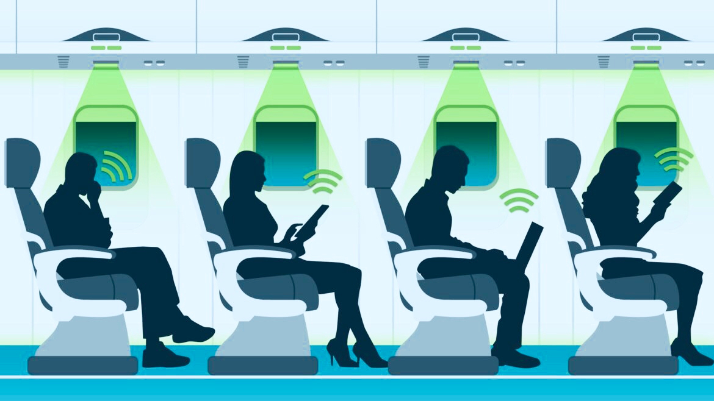

Li-Fi es una tecnología de red óptica inalámbrica que utiliza diodos emisores de luz para la transmisión de datos. Li-Fi está diseñado para utilizar bombillas LED similares a los que actualmente se utilizan en muchos hogares y oficinas preocupados por la energía. Sin embargo, las bombillas Li-Fi están equipadas con un chip que modula la luz de manera imperceptible para la transmisión de datos ópticos. Los Datos Li-Fi se transmite por las bombillas LED y recibida por los fotorreceptores. Modelos de desarrollo tempranos de Li-Fi eran capaces de trasmitir a una velocidad de 150 megabits por segundo (Mbps). En el laboratorio, con LEDs más fuertes y una tecnología diferente, los investigadores han permitido llegar a 10 gigabits por segundo (Gbps).
